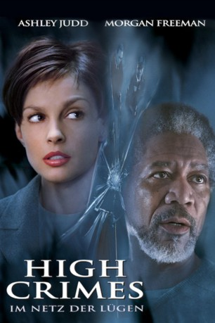

gesehen am 12.05.2016
gesehen am 12.05.2016Alternativ: High Crimes gesehen am 12.05.2016
 
 IMDB-Wertung: 6.3 / 10
IMDB-Wertung: 6.3 / 10  Metascore:
Metascore: 
Claire Kubiks Welt steht Kopf. Eben noch war die profilierte Topanwältin in glücklicher Ehe mit dem Ex-Marine Tom verheiratet. Schlagartig zerbricht dieses Idyll, als Tom festgenommen und vor dem Militärgericht des Mordes angeklagt wird. Ron Chapman, so Toms angeblich wahrer Name, soll zehn Jahre zuvor bei einem Einsatz in El Salvador neun Menschen massakriert haben. Claire hält zu ihrem Mann. Ihr zur Seite stehen der Militäranwalt Embry sowie der unkonventionelle Jurist Grimes. Zwar deuten immer mehr Indizien auf eine hochrangige Verschwörung hin, doch erschüttern Claires Nachforschungen zunehmend auch ihr Vertrauen in Tom.
Jahr: 2002
Dauer: 115 Minuten
FSK: 12
Land: USA Studio: 20th Century FoxTonspuren: DD5.1 - ,
Untertitel: Englisch,
Auflösung: 1080p (1920x816) Größe: 8448 MB
Genre: Thriller, Drama, Krimi, Mystery
Regisseur:  Carl Franklin
Carl Franklin
Drehbuch: Drake Doremus
Soundtrack:
Darsteller:
 Ashley Judd als Claire Kubik
Ashley Judd als Claire Kubik Morgan Freeman als Charles W. Grimes
Morgan Freeman als Charles W. Grimes Jim Caviezel als Tom Kubik / Sgt. Ron Chapman
Jim Caviezel als Tom Kubik / Sgt. Ron Chapman Adam Scott als Lt. Terrence Embry
Adam Scott als Lt. Terrence Embry Amanda Peet als Jackie
Amanda Peet als Jackie Bruce Davison als Brig. Gen. Bill Marks
Bruce Davison als Brig. Gen. Bill Marks Tom Bower als FBI Agent Mullins
Tom Bower als FBI Agent Mullins Michael Gaston als Maj. Lucas Waldron
Michael Gaston als Maj. Lucas Waldron Jude Ciccolella als Col. Farrell
Jude Ciccolella als Col. Farrell Emilio Rivera als Salvadoran Man
Emilio Rivera als Salvadoran Man Michael Shannon als Troy Abbott
Michael Shannon als Troy Abbott John Billingsley als Lie Detector Coach
John Billingsley als Lie Detector Coach Dendrie Taylor als Lola
Dendrie Taylor als Lola Paula Jai Parker als Gracie
Paula Jai Parker als Gracie Kyle T. Heffner als San Francisco Judge
Kyle T. Heffner als San Francisco Judge Arlen Escarpeta als Guard #2
Arlen Escarpeta als Guard #2 Elaine Corral Kendall als Reporter #3
Elaine Corral Kendall als Reporter #3 James Cotner als Delivery Man , uncredited
James Cotner als Delivery Man , uncreditedDatei: X:\2002\High Crimes - Auf höchsten Befehl (2002, FSK12, 1920x816).mkv seit 06.05.2016
Festplatte: HD 1996-2002
 Es gibt insgesamt 93 Filme in der Gruppe '2002'
Es gibt insgesamt 93 Filme in der Gruppe '2002'